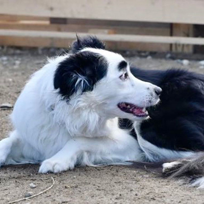

07_テキスト回り込み

一括りにフランス人と言っていますが、これには白人系フランス人だけでなく黒人系、中国系、ベトナム系、アラブ系などがかなり含まれています。ガングロのコスプレしている黒人のカワイ子ちゃん、巫女さんコスプレしている中国のおねえちゃん、特攻隊のコスプレで日の丸を旗降る白人にいさん、ゴスロリのベトナムおねえちゃん、頭にかぶるスカーフだけはどうしても取り去ることが出来ず首から下だけ何かのコスプレしているアラブのおねえちゃん、などなどいろんな人種文化ごちゃまぜのなんとも不思議なコスプレを堪能させていただきました。
このイベント、トータル的に言えば「ナンチャッテニッポン」ってな感じなんですけど、それでもマンガ、アニメ、ドラマ、音楽などからニッポンというものに入門した人達にとっては、手軽に親しみ、触れ合え、体験できる遠くて近いニッポンという事なので、来場者の満足度はかなりのものだと思います。世界中のおとなしい部類の人々がこうして日本と波長が合って日本化されていって、徐々に日本から世の中が変化してくんだろうなあって実感しました。
※「float: left」と指定された要素は左に配置され、それ以降に書かれた要素はその右側に配置される。
※「float: right」ならその逆で、指定された要素は右に、それ以降の要素は左側に配置されます。
※「float: right」ならその逆で、指定された要素は右に、それ以降の要素は左側に配置されます。